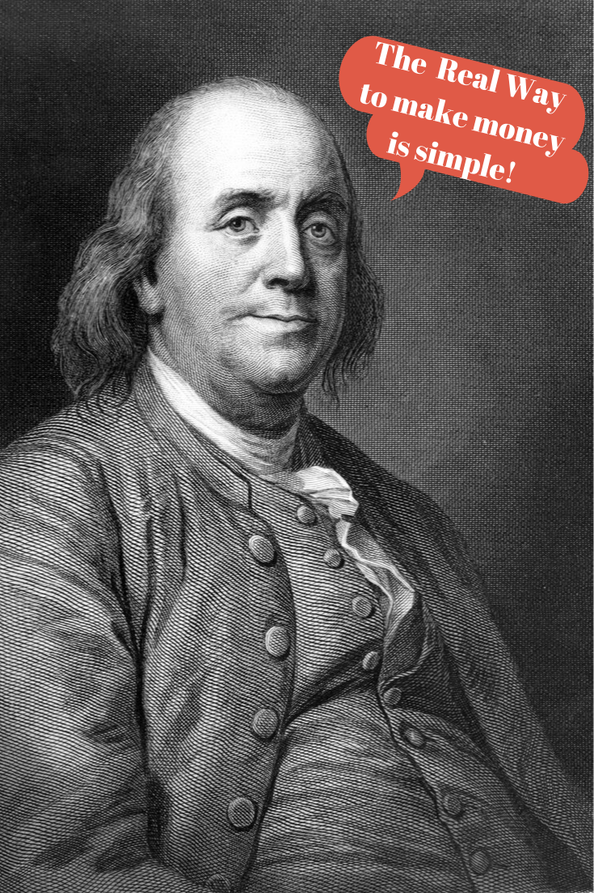
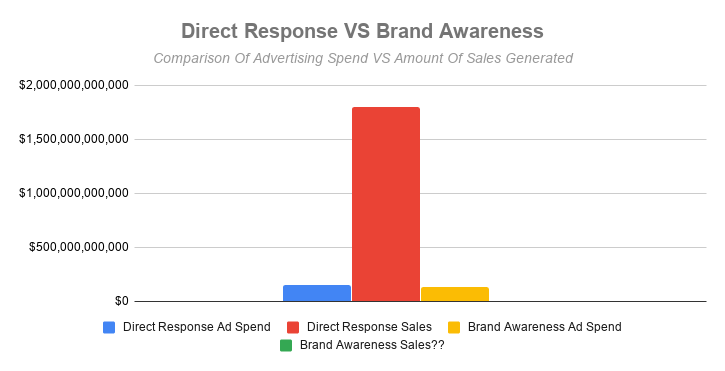

Phoenix Direct Response Copywriting
I'll hand craft your ad copy for maximum success.
Contact me today to get started:
- Email: hi@techiesupport.co
- Phone: 623-252-6167
100% Satisfaction Guarantee
You Can Laugh at Money Worries—if You Follow This Simple Marketing Plan That Earned U.S. Businesses $1.798 Trillion in a Single Year
Why Some People Almost Always Make Money in Business While Others Continue to Struggle

Figure 2: You can laugh at money worries.
What does the word “advertising” mean to you? You might picture a McDonald’s TV ad with a smiling man eating a cheeseburger. Maybe you think about those car accident lawyer billboards you see as you drive down the highway. Or that beautifully designed, oh-so-sexy Dior perfume ad in the latest issue of People. These advertising campaigns have millions of dollars poured into them every year. But that’s not the way to make money. In fact, it’s a giant waste of money! The real way to make money is simple.
This simple marketing plan has been around forever and never goes out of style. Why? Because it just works. Way back in the 15th century, a Venetian publisher named Aldus Manutius started it. From there, it made its way through the years and over the seas to end up right here in America. As a matter of fact, Benjamin Franklin himself used it in his own business!

Figure 3: The real way to make money is simple.
Who Else Wants a Successful Business?
Success in business seems like a subjective matter depending upon who you talk to. Some people want a business that truly helps people. To them, that’s successful. Others want a business that they don’t have to spend too much time on. That’s their measure of success. More often than not, people want their business to grow and expand. When they think of success, that’s what they see. What about you?
The truth is, there’s nothing wrong with any of those goals. Those would all be successful businesses in their own right. But from a purely “nuts and bolts” perspective, a successful business is one that turns a profit. If you can make your business turn a profit, you can get the resources you need to truly help people. If you can make your business turn a profit, you can create an automated workflow that doesn’t require too much of your time. If you can make your business turn a profit, you better believe you can grow and expand it.
Three Types of Entrepreneurs—Which Group are You In?
Which of these sounds most like you?
“The Freelancer”
Figure 4: The Freelancer
You work hard perfecting your craft. Your clients know they can trust you to do premium work. You have a website and a solid portfolio. When you get referrals, it’s almost always a slam dunk for you. But some months the referrals get pretty thin. You’ve tried business networking groups, but it’s hard to find the time to be at all the meetings and still get your projects out the door. You’ve tried those online marketplaces like Upwork, but the competition is stiff and it’s a race to the bottom on pricing. You’ve even tried a little advertising here and there, but it doesn’t seem to work well (if at all). And you don’t want to throw money away.
“The One Man Show”
Figure 5: The One Man Show
You put in a ton of hours working on your business. You’ve gone the extra mile by filing for your LLC with the state. You’ve built yourself a website and claimed the social media pages for your business. You try your best to get reviews and testimonials from your customers. People do refer you sometimes, but it’s not a reliable source of income. You’ve heard that the business networking groups like BNI are the way to go, but who has the time for that when they’re running a business? You’d love to offload some of your work on an employee and free up your time, but it’s hard to justify the expense of hiring someone. Sure you’ve run some ads, but as far as you can tell they haven’t done anything for you. And it feels like you’re just lighting a match to your money when you do.
“The Executive”
Figure 6: The Executive
You built a decent-sized business. You even managed to hire a small team of employees that help you take care of your day-to-day operations. You have your legal ducks in a row and an accountant who takes care of the books. You’ve got a website and all the social media pages claimed for your business. You’re on Google Maps and have a review or three. Most of the year, you stay busy enough. But you still have slumps that are preventing you from growing. It’s hard to find room in the budget to attract top talent to your team. The types of referrals you’d get from a networking group don’t necessarily fit your ideal customer. And you’ve worked with advertising agencies to do some marketing, but the results have been lackluster. You know you need to market your company, but you want to make sure your ad budget is bringing in the maximum return on investment.
It Seems Incredible That You Could Earn a 1172% Return on Your Marketing Budget
Admittedly, this number does sound outrageous. You’re probably thinking to yourself that there is no possible way you could generate that kind of return on investment. But you can. And that’s exactly what happened in 2010 here in the U.S. Smack in the middle of the Great Recession, the second worst economic downturn in history.
While many were losing their homes, closing up shop and scrambling to find jobs, a select group of businesses were spending $153.3 billion on the exact same marketing strategy that Ben Franklin used all those years ago. Which sounds absolutely insane until you consider that they ended up making a combined $1.798 trillion from their investment. But that’s not even the craziest part.
Right and Wrong Marketing Methods—and Little Pointers That Will Increase Your Profits
The $153.3 billion that was spent in 2010 only represented 54.2% of the total ad expenditures in the U.S. that year. You’re probably doing some quick math in your head and realizing that there’s another 45.8% floating around out there unaccounted for. And you’re absolutely right. That percentage represents another $129.6 billion in ad spending in 2010. Not exactly a small number. You’re wondering how much return on investment that got.
Here’s the kicker: Nobody knows. You read that right. In 2010, a second group of businesses spent $129.6 billion on advertisements with absolutely no way to track their return on investment. $129.6 billion. That’s more than the GDP of Alaska, Arkansas, Delaware, Hawaii, Idaho, Maine, Mississippi, Montana, Nebraska, New Hampshire, New Mexico, North Dakota, Rhode Island, South Dakota, Vermont, West Virginia or Wyoming. And it went right up in smoke with nothing to show for it.
The reason why this turned into such a colossal waste of money is because these businesses were practicing a marketing “strategy” known as brand awareness. What is brand awareness, you ask? A fancy name for the extent to which customers are able to recall or recognize a brand. That’s it. You probably know all about McDonald’s and Coca-Cola, but that doesn’t mean you prefer them over Burger King and Pepsi. And that’s the fundamental flaw with brand awareness marketing. The mere fact that a potential customer might be able to recognize your logo has nothing to do with whether or not they’re going to spend their hard-earned money with you. And there’s no way to track how many “mind units” an expensive brand awareness ad produced for the business. There’s a better way.
What Everybody Should Know About Marketing
Marketing isn’t a “spray and pray” exercise. It isn’t some kind of “black box” that you aren’t meant to understand. You don’t have to burn warehouse-sized stacks of cash in the off chance that a potential customer will recognize your brand and miraculously decide to pay you. True marketing—the kind that gets measurable results—is simple, straightforward and sound.
The kind of marketing you should be focusing your efforts and your budget on is known as direct response marketing. It involves running ads that are designed to get your customer to take a definite action. A definite action that benefits your business, like paying you real money and not “mind units”. And most importantly, a definite action that can be accurately tracked and measured. That’s why we know that $153.3 billion in ad spend resulted in $1.798 trillion in sales.

Figure 7: Direct Response VS Brand Awareness
So while brand awareness marketing is a hopeful rain dance with no guarantee of success, direct response marketing is proven, time-tested, scientific math. The numbers don’t lie. Your direct response ad campaign either works or it doesn’t. The best part is, with the technology available today you’ll know almost immediately whether it’s working or not. And you’ll know exactly which part needs to be tweaked to make it work. Say goodbye to throwing your money away on worthless advertising!
To People Who Want Proven Marketing That Works—but Don’t Know Where to Start
You now know the difference between wasting $129.6 billion on ads that don’t work and carefully spending $153.3 billion on ads that generate $1.798 trillion in sales. You see the difference between throwing away piles of cash in the hope that someone will be “aware” that you exist and making a 1172% return on your marketing budget. You understand that you can realistically turn a $1000 ad campaign into $11,000 in revenue for your business with direct response marketing.
If you’re the “Freelancer”, you won’t need to spend precious hours at business networking group meetings hoping someone tosses you some referral leads. You won’t have to degrade yourself working for peanuts on Upwork. You’ll never waste your money on ads that don’t work ever again!
If you’re the “One Man Show”, you won’t need to sit and stress while you wait for business to come through the door. You won’t have to try carving even more time out of your already overloaded schedule to meet with your BNI group. You’ll finally be able to hire that employee you desperately need and take some time off!
If you’re the “Executive”, you won’t need to worry about the yearly slumps in sales. You won’t have to struggle to find the money to pay for the best of the best talent. You’ll never be in the dark about whether or not your marketing budget is producing results ever again!
No matter which category you find yourself in, with direct response marketing you can turn on a “fire hydrant” of money whenever you want. It’s the closest you can get to firing up a press and printing it yourself (and a heck of a lot more legal)!
Figure 8: With direct response marketing you can turn on a "fire hydrant" of money whenever you want.
Here’s a Quick Way to Start Making Money With Direct Response Marketing
You want results, and I’m here to give them to you. I’ll hand craft your ad copy for maximum success.
Contact Me to Get Started Now
- Email: hi@techiesupport.co
- Phone: 623-252-6167
Testimonials
“Great experience with Ben! He’s professional and has a passion and drive for his trade. I wouldn’t hesitate to call him again. I trust him and his work.” -Preston C., Phoenix, AZ
“Honest and great work. Very nice and professional. His work is outstanding!” -Jenilee B., Phoenix, AZ
“Ben is a true professional. He understands what the client wants and therefore can deliver to expectations. He is dedicated, shows initiative and creative thinking to achieve the best outcome which meant the whole process from start to finish was effortless. Highly recommended.” -Pat C., Tasmania, AU
“Ben was super easy to work with, completed the work early, and was extremely patient with changing requirements.” -Ian J., Austin, TX
© 2020 Techie Support, LLC